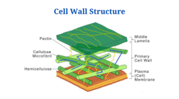

The rough ER is important to the cell because without it, the cell dies. The cell will die without the rough ER because the rough ER produces
protien and distributes it to other organallites so that the cell will live. This means that without the rough ER, other organallites will also
die since they dont have protien from the organalletes. It is also assosiated with the emzymes of a cell which are protiens
that speed up the chemical reactions in the human body. Without that, the entire organisim dies. The rough ER's structure is
consisted of membrane sheets called cisternae. The cisternaearises is near the nucleus and it extends across the cytoplasm.
The rough ER has space to store emzymes for needed chemical reactions for protien.
.
The cell walls are "blocking" us from the freedom to become stronger.
The cell wall and membrane is blocking former protiens from getting freedom.

Related to the cell membranes, the walls blocked our fellow protiens from reaching other areas to help the cell in its time of need.
We need to stop the cell wall from blocking our fellow protiens and start to allow them to have more freedom to go in any area of the
cell they want. If you vote rough ER or our ally the smooth ER, we will promise to allow more freedom to protiens across the cell and to stop these "tough" strong blockers. In reality, they are mentally weak people from their rich houses with daddy issues.